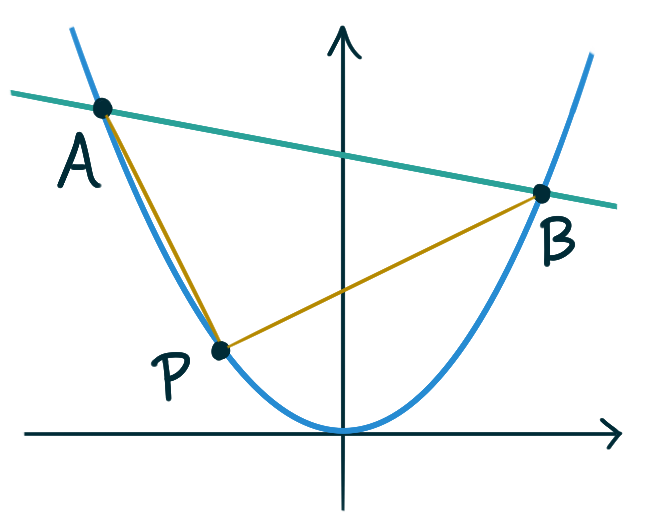

We want to construct a box whose base length is three times the base width.
The material used to build the top and bottom cost $10/ft²
and the material used to build the sides cost $6/ft².
If the box must have a volume of \(50\)ft³
determine the dimensions that will minimize the cost to build the box.
A manufacturer needs to make a cylindrical can
that will hold \(12 \mathrm{fl oz}\) of cream soda.
Determine the dimensions of the can that will
minimize the amount of material used in its construction.
(Recall that for food products in the US,
\(1 \mathrm{fl oz} \approx 30 \mathrm{ml}\),
which as a volume corresponds to 30 \mathrm{cm}^3\)).
A Norman window has a shape
of a rectangle surmounted by a semicircle —
it has three straight sides and one curved side on top,
and the diameter of the semi-circular curved side
is equal to the width of the rectangle.
If the perimeter of the window is fixed at 12 ft,
what are the dimensions that result in
the window having maximal area?
If the area of the window is fixed at 10 ft²,
what are the dimensions that result in
the window having minimal perimeter?
Two poles are connected by a wire that is also connected to the ground. The first pole is 20 ft tall and the
second pole is 10 ft tall. There is a distance of 30 ft between the two poles. Where should the wire be
anchored to the ground to minimize the amount of wire needed?
A rectangle is to be inscribed in the ellipse
\[\frac{x^2}{4} + \frac{y^2}{1} = 1\,.\]
with its sides parallel and perpendicular to the coordinate axis —
i.e. it’s not tilted.
What should the dimensions of the rectangle be to maximize its area?
What is the maximum area?
A long steel pipe is being carried, perfectly level, down a hallway.
The hallway is 15 ft wide, but makes an abrupt right-angled turn
into a hallway that is only 6 ft wide.
What is the longest the pipe could possibly be to make this turn
while still being held perfectly level?
With a straight piece of wire 4m long, you are to create
an equilateral triangle and a square, or either one only.
Suppose a piece of length \(x\) meters is bent into triangle
and the reminder is bent into a square.
Find the value of \(x\) which maximizes
the total area of both triangle and square.
What are the dimensions of an isosceles triangle
inscribed in a circle of radius \(r\)
(with vertices on the boundary of the circle)
that has maximal area?
Suppose one side of a triangle has length \(\ell\)
and another side has length \(2\ell\).
Show that he maximum possible area of the triangle is \(\ell^2.\)
If the tangent line at a point \(P\) on the curve \(y = x^3\)
intersects the curve again at \(Q\),
let \(A\) be the area of the region bounded by the curve
and the line segment \(PQ.\)
Let \(B\) be the area of the region
defined the same way but starting with \(Q\) instead of \(P.\)
What is the relationship between \(A\) and \(B?\)
The line \(y = mx + b\) intersects the parabola \(y = x^2\)
in points \(A\) and \(B\). Find the point \(P\) on the arc
the parabola that maximizes the area of the triangle \(PAB\).

Consider the scenario from a previous question
about carrying a long steel pipe around a corner.
Suppose that the hallways were both 12 ft tall,
and the pipe didn’t have to be held perfectly level.
What is the longest the pipe could possibly be to make this turn?